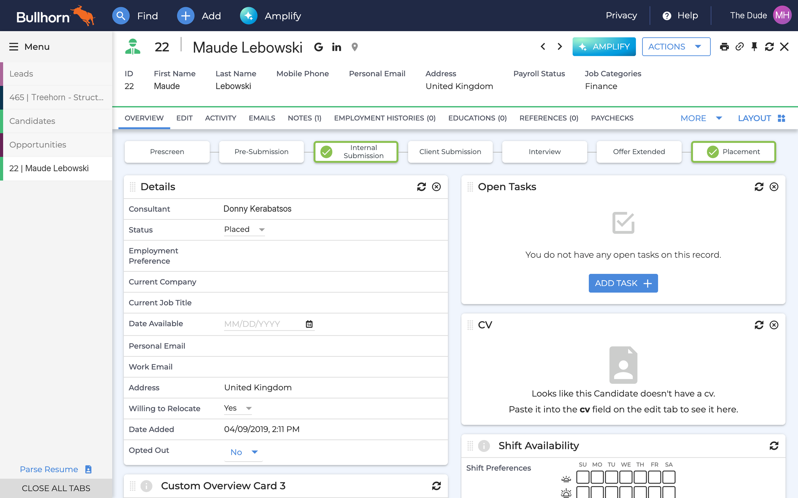
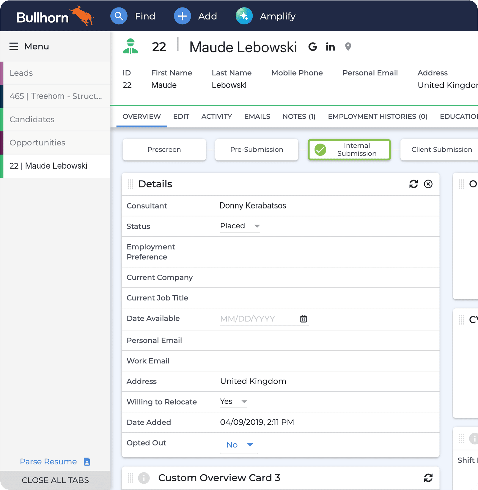
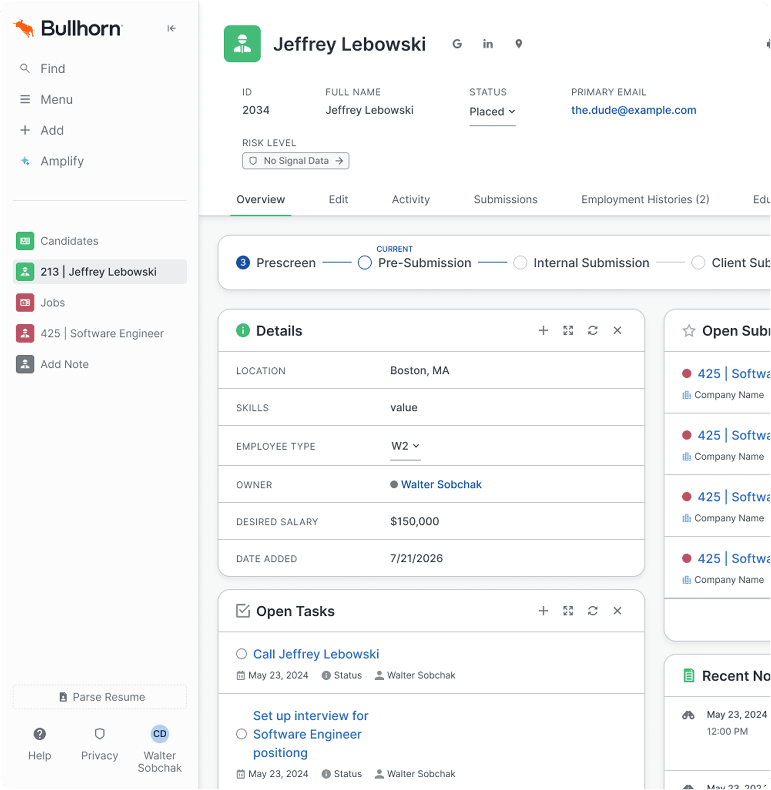
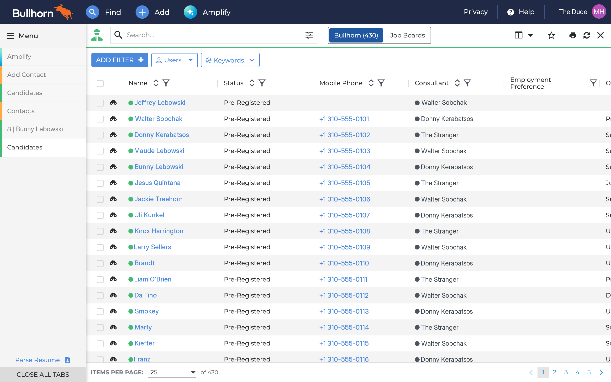
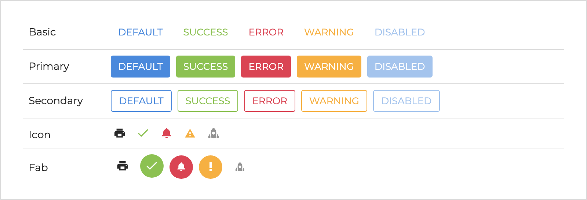
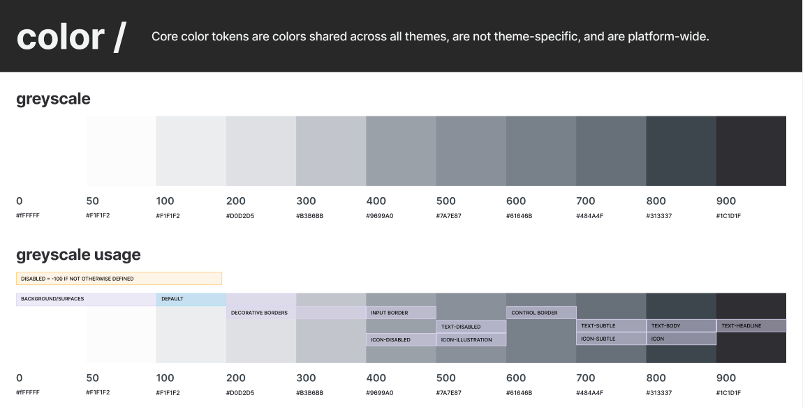
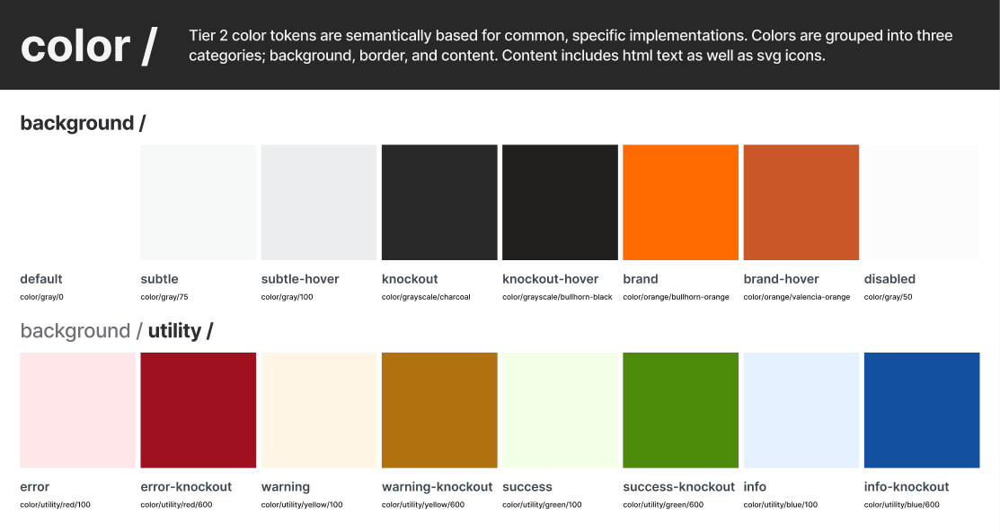
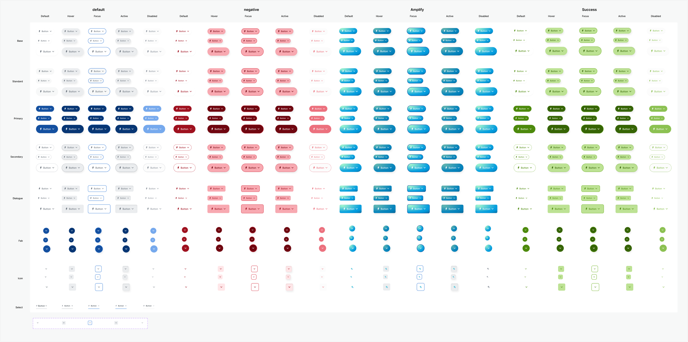
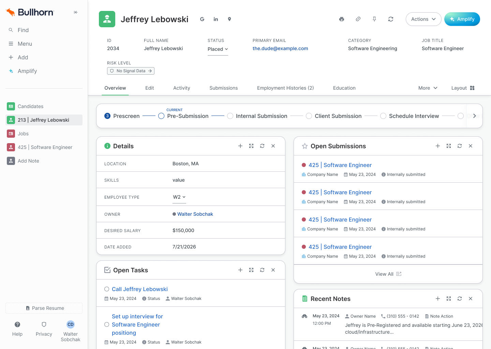
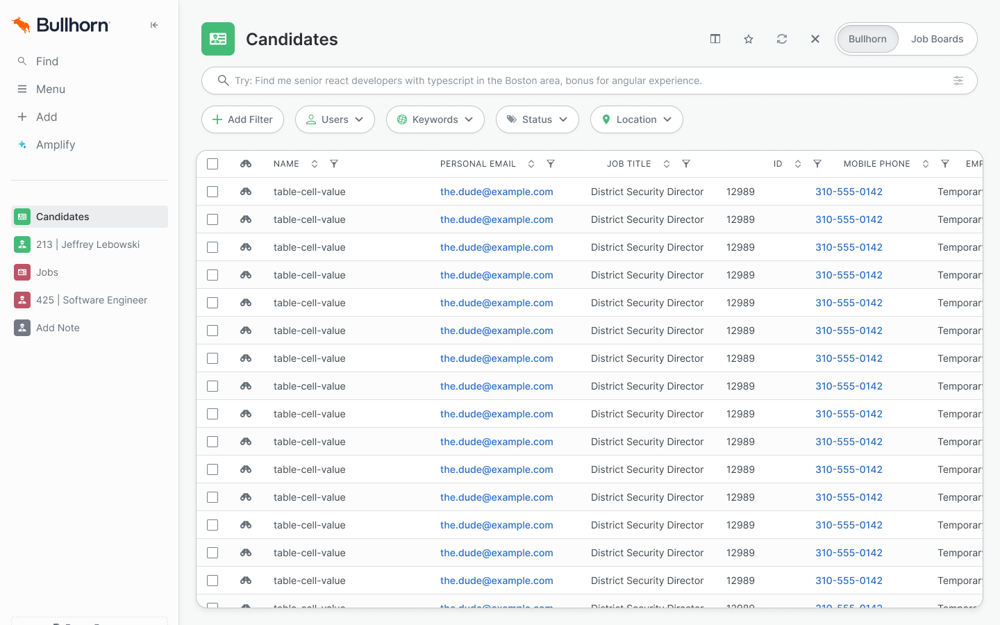

A new look for Bullhorn's platform, built from the smallest pieces up.
Bullhorn brought me in for three months to update how its applicant tracking system looked, across the whole platform. The candidate record and the candidate list came first, because recruiters use them most. Once I saw how many components sat under those screens, I proposed a token system, got engineering behind it, and spent the rest of the contract building it.
Focus
Design tokens
Component library
Scope
Full platform
500+ components
Context
Three-month contract
Via Mondo

The candidate record, before the redesign.


The candidate record, before and after.
The first release focused on the two screens recruiters use most.
The candidate record is where a recruiter reads everything about one person. The candidate list is where they find that person in the first place. Those two get more use than anything else in the product, so they went first.
Three months is tight for a whole platform. It gets tighter once you find out how much each screen is standing on.
Each screen changes depending on who's signed in and what their account allows.
Neither screen is one layout. Different kinds of users see different versions of it, and features and content switch on and off depending on who's signed in and what their account is allowed to do. Every design had to hold up across all of those.
Then there were the components, and there were a lot of them. Some came from a separate legacy system. One of the libraries was about to start being tokenized anyway. There was no Figma library behind any of it, so the code was the only record of what anything was supposed to look like.

The candidate list, before the redesign.
I offered a base token system the team could adapt quickly.
It was a basic one, a set of core values with a naming structure on top. The point was to have something real to react to rather than a slide about what a token system could be.
I worked through it with the engineers to see whether it could ride along with the work they already had planned instead of competing with it. It could. It went into the scope, and my job changed from designing screens to building the system every screen would be made from.
Atomic elements show up on nearly every screen in the product.
Take the button. Restyle it on two screens and the rest of the platform still needs the same decisions made again. Get it right at the atomic level and every screen that uses it improves with it. If you control the details, you get a lot more change for a lot less work.
The tokenization work that was about to start was the opening. If values were going to be pulled out of the code anyway, they could come out with names and a structure, and the candidate record and list could be the first screens built from them.

The button as the Novo documentation shipped it, before the work started.
The smallest tokens are the only layer with raw values.
I think of it as the spice rack. Every ingredient the system is allowed to cook with sits here, and nothing gets added anywhere else. The file is called subatomic, and it holds ninety-one core values, the spacing steps and the color ramps, and names like color.background.subtle-hover that say what those values are for. It exports from Figma as JSON, so engineering reads the same file the designs are built from.
The core values carry four modes: a default, a warm variant and two brand themes. Components only ever point at names, so a theme is another column of values. Nobody has to duplicate a component to get one.

The spice rack. Core grayscale values, and the jobs each step is allowed to do.

One layer up, every background has a name, and every name points at a core value. subtle-hover is color/gray/100.
Anyone on the team can check the rule with a text search.
Putting the rule in the structure instead of a guideline means a junior developer can check it as easily as I can. Nobody has to be senior enough to have an opinion.
It also settles what happens when a component needs something the system doesn't have. The answer is a new named role. A raw number doesn't get in just this once.

One component from the library. Eight variants, four color roles, five states, and a focus state on every one of them. No fill in it is a hex.
More than 500 components, named the way the code names them.
The component layer covers everything Novo already had, down to the sub-components. That came to more than five hundred. Each one is named the way the code names it, so the button in Figma is novo-button and nobody has to translate between the file and the repo.
Its tokens follow one pattern: component, property, variant, then role and state. button.color.icon.content.hover reads as exactly what it styles. Of the 903 component tokens, 889 point at another name instead of a value.
Focus and disabled states were in every component from the first draft.
Focus and disabled states are part of each component set from the first draft. Adding them after the fact means reopening every variant, and at five hundred components that's the kind of job that quietly never happens.
The library is built atoms up, the way atomic design describes. A button is an atom, a table row is built from atoms, and screens are built from those, so a fix at the bottom reaches every place it's used.

The candidate record, redesigned.

The candidate list, redesigned.
What the engineering team says changed.
The designer is the worst person to judge whether a system landed, so I asked the engineer I'd worked with most closely what was different.
None of the answers are about how anything looks.
There was no Figma library before
The team used existing components in whatever state they were in. The low-level ones hadn't changed in a few years.
Five developers build from the library
Two teams and five developers now build from the Figma library, with more teams on the way.
The new tokens say what they're for
Bullhorn already had tokens. What changed is that the new ones say what they're for, and those are what the team uses now.
New work uses the new tokens
Novo has about 90,000 lines of CSS. Adoption across that is small and growing, because every new piece of work uses the semantic tokens.
What's still open.
Three months doesn't finish a system this size. I'd rather name the gaps than leave them for someone to find.
Fourteen tokens still hold raw values
Fourteen of the 903 component tokens still hold a raw number, mostly tooltip and popover max-widths. They're small, and they're the kind of leak that spreads if nobody names it.
Adoption isn't measured yet
"Small and growing" is the right direction and a weak baseline. Counting semantic-token declarations per build would turn it into a trend line.
Why I'd make the same call again.
I could have spent three months restyling two screens and left. They'd have drifted the same way the old ones did, and the rest of the platform would still be waiting its turn. Starting with the smallest pieces meant every screen after those two starts from the same place, and five developers now build from it instead of working it out.
Next project
02 / 07Fintech • Systems
Terafina
People didn't trust the product enough to finish.
I rebuilt the presentation layer from atomic components up, and abandonment dropped 12%.